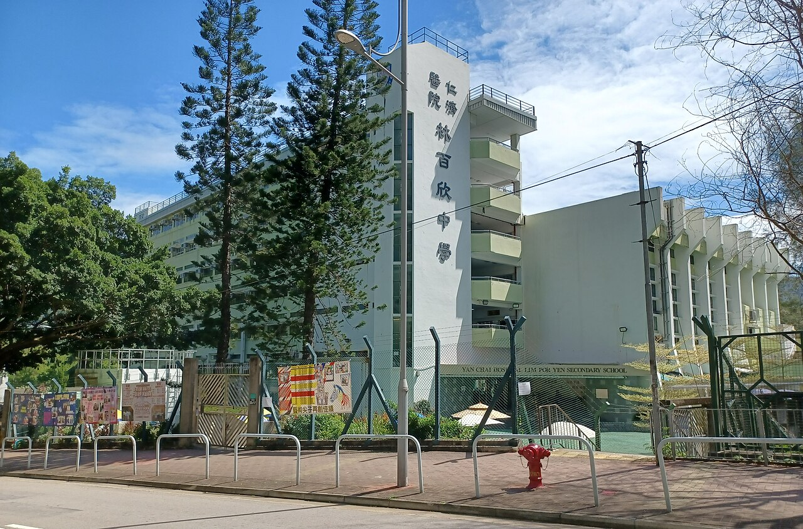
在林百欣中學成立
於校園開始童軍訓練。現時星期六仍在這所學校集會。
集會位置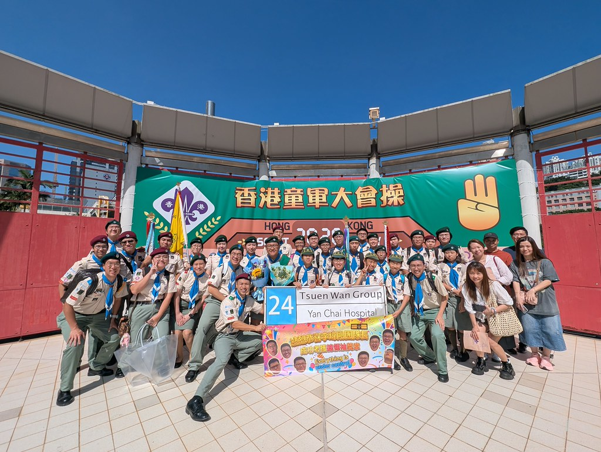
1984 年在仁濟醫院林百欣中學成立。1998 年成立深資童軍團，2010 年成立幼童軍團，並開放招募 6 至 25 歲青少年。2001 年起主辦機構為仁濟醫院董事局。多個支部曾獲新界地域評為優異旅團，年份見這裡。

於校園開始童軍訓練。現時星期六仍在這所學校集會。
集會位置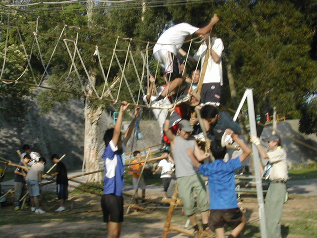
在洞梓童軍中心以竹木和麻繩做大型紮作，此後成為每年的傳統。
開啟相簿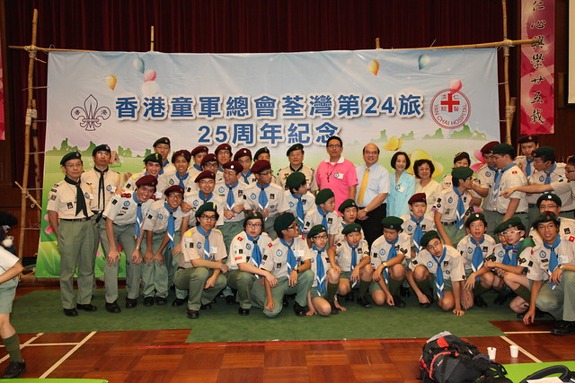
舉行旅慶典禮暨晚宴。同年成立幼童軍團，四個支部齊備。
開啟相簿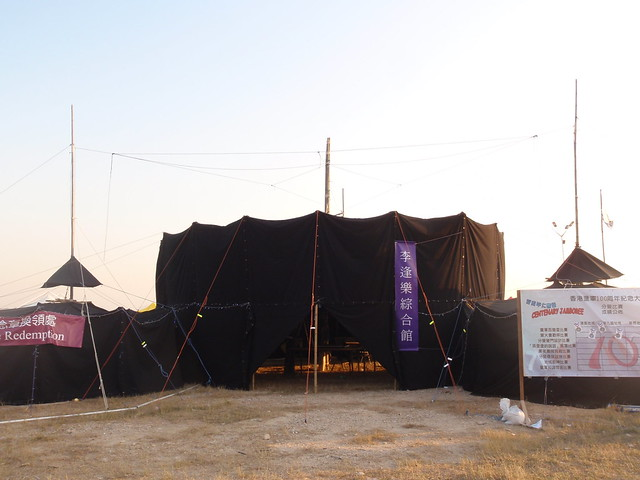
香港童軍百周年大露營中，以 Schwarz Magic 在硬地架設黑營，不用營釘和營繩。
開啟相簿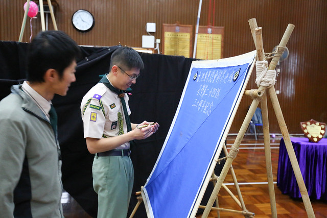
舉行旅慶。五一先鋒工程移到白沙灣，多個友旅一起參加。
開啟相簿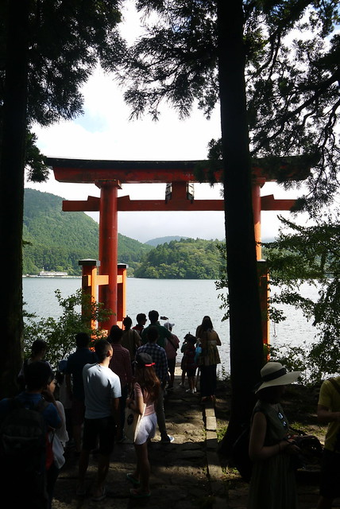
前往日本，登上海拔 3,776 米的富士山。
開啟相簿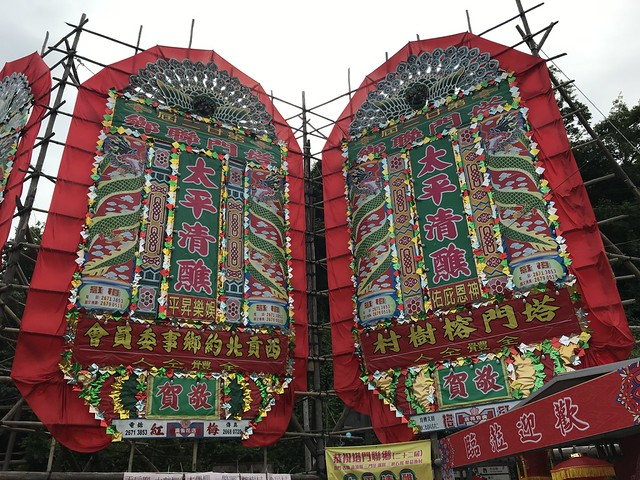
重返塔門露營，適逢十年一度的太平清醮。同年亦有三十五週年旅慶。
開啟相簿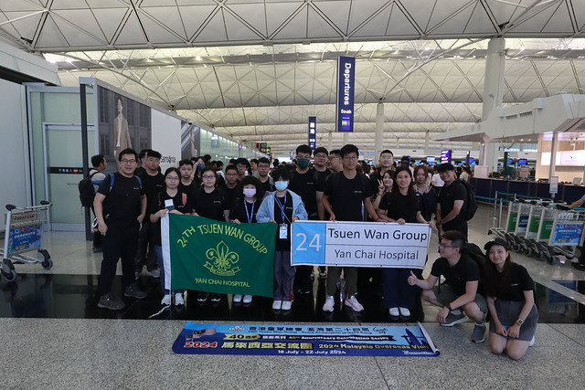
深資童軍和樂行童軍到吉隆坡、檳城，與當地旅團交流。
開啟相簿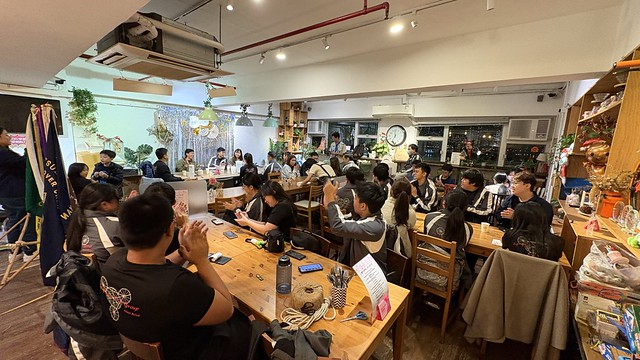
12 月 27 日晚宴。同日另有童軍團戶外集會暨宣誓禮。
開啟相簿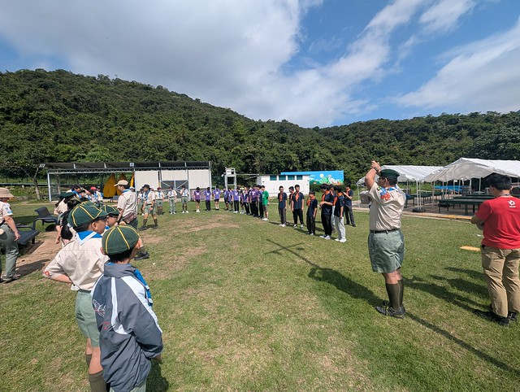
一年一度的先鋒工程日，在營地列隊和搭建工程。
開啟相簿